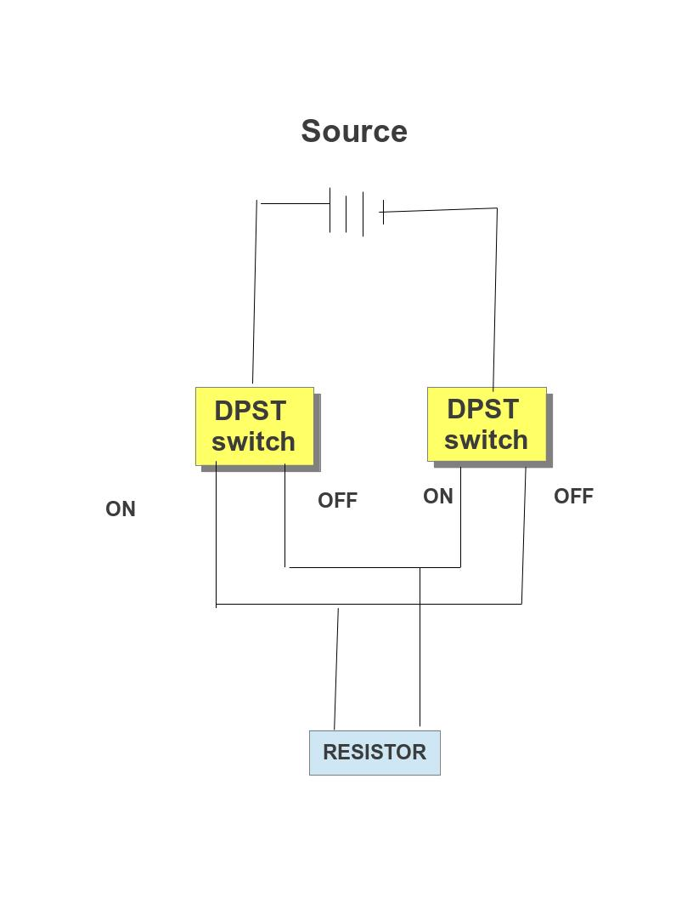

Tight-rope Robotic Arm Model
Design analysis and decision
Preference
- simple design
- to create planar robot with only two degree of freedom
- to develop joints with only degree of motion that is required
Force and Energy analysis
Our machine will have to face or will be acted by following forces:
- Gravity (hampers to create lift)
- Tension (rope thats unable to handle tension may break)
- Friction (hampers in linear motion of hand and helpful for effective grasping)
- Rotational force from motor(movement of arm and strong grasping)
Our machine can be made to use two of these power sources:
- DC current from AC to DC converter
- DC current from battery
| DC current from AC to DC converter | DC current from battery |
|---|---|
| Max volt:15 | Max volt:13 |
| Could not be used at the time of loadshedding | Could be used at the time of loadshedding |
| Unlikely to be used in actual robot as electric source should be always near by. | More close or could be used in actual advanced robot due to no limitation of staying near an electric source. |
Preference
- Our robot should be as light as possible to minimize the energy required for lift.
- The rope should be strong enough to overcome the tension caused by the weight of the robot.
- Friction between rope and the machine should be minimum to reduce energy required for the operation.
- Center of gravity should be actually below the rope to avoid dangling of the robot in any side.
- To use Aluminum metal due to its characteristic of weight to strength ratio (it is light but strong).
- To use nylon rope as it is strong and has less friction.
- To create robot symmetrical in all aspects.
Hand
Hand is the essential part of the robot and its design should be dictated as per the size of the rope to be used. It holds the whole weight of the body and some defect on the design of hand may cause the robot to fall down and can destroy it.
Preference- Small in size as much as possible
- Design should be close to human arm
- Hand should allow only few movements which is required to create thought functionality
- Design must create an ease in demonstration on exhibition
- Hand will have only two point which allow motion:
- Thumb (as a lock on to rope and to ease robot to be kept in the rope)
- Fingers (moves just enough for grasping and avoids falling down by tilting of robot)
Functionality of hand
Grasping
Different forms of Grasping methodology that can be used:
Electromagnet
process of grasping and non grasping through electromagnet
process of grasping and non grasping through electromagnet
We can use electromagnet to enable hand for grasping. It works on the principle of like pole repels and unlike pole attracts. The attractive force is the way to tighten the grip and repelling force is used lose the grip.
Advantages- A simple idea
- Hands can be made to grasp and lose with change in direction of current through electromagnet
- The change from gripping hand to non gripping can be done almost instantaneously
- Electromagnet is heavy due to addition of soft iron core
- The force generated by electromagnet may not be enough for proper grasping the rope
- Its not really close to the design of actual human hands and may not be used in advanced robot
motor (thread)
process of grasping and non grasping through electromagnet
process of grasping and non grasping through electromagnet
A motor is used to pull a thread which will in turn pull fingers of hand creating a grip.
Advantages- A simple idea close to human hand.
- Hands can be made to grasp and lose with change in direction of current through motor.
- It can grab rope more easily and accurately.
- Motor is heavy and adds load.
- It takes time for a hand to be changed from grasping to non grasping and vice-versa.
- It will be harder to operate with multiple controller.
- It is close to the design of actual human hands and may be used in advanced robot.
motor (screw)
process of grasping and non grasping through electromagnet
process of grasping and non grasping through electromagnet
A motor is used to move the screw up and down creating a grip.
Advantages- Hands can be made to grasp and lose with change in direction of current through motor.
- It can grab rope very tightly.
- Motor is heavy and adds load.
- It takes time for a hand to be changed from grasping to non grasping and vice-versa.
- It will be harder to operate with multiple controller.
- It is quite far from actual human hand and thus may not be used in actual advanced robot.
We decided to use Electromagnet as it is not far from actual human hand design and easy to be demonstrated in Exhibition. On the failure of electromagnet we will choose other as alternatives.
Current reverser
Preferences- simple in design
- light weight
- less expensive if we buy ready made object
- simple enough to create
Different types of current reverser that can be used:
4 way key
A circular device with 4 places to connect wire and 4 places to place key. Keeping the key signifies closed circuit else open circuit.
Advantages- can be found in the market
- cannot change the direction of current instantaneously
- may create confusion while using
DPST switch (Double pole single throw)
It consist of two DPST switch which will connect input across one of the two of its output wires. The combination of two DPST switch can enable us to create a current reverser with change of switches to on state or off state at once.
circuit diagram of current reverser using two dspt switch Advantages
- easy to create using switch
- easy to use
- current can be reversed almost instantaneously
- the circuit diagram can be confusing
Armed current reverser
It is a device that looks like a miniature circuit breaker but reverse the direction of current instead of working like a fuse.
armed current reverser
Advantages
- easy to grasp the principle of operation
- easy to use
- current can be reversed almost instantaneously
- should be created by ourselves
Programmable clock disk
Programmable disk is a device that can be used to program a robot from machine level. It consist of a circular disk consisting of metal plate which is carefully cut so that they represent appropriate time the switch must be on. The upper portion consist of clocks minute hand with carbon brushes which connect with metal on disk to switch the circuit on.
Programmable clock disk animated design
Data structure analysis used by Omega TRAM
3 tri-bit to control every single possible movement of Omega TRAM. The 3 tri-bit will control the grasping of two hands independently and one another tri-bit will control the movement of joint between upper and lower arm either towards the center of gravity or vice-versa.
Omega TRAM ByteOmega TRAM Byte refers to the amount of information send to the OMEGA TRAM at a time. The term Byte is used as it is closed to computer which works on byte i.e. 8 binary Bit thus is easy to remember.
Tri-bitIntroduction
Tri-bit symbolizes the different types of data that can be send through a message carrier i.e. wire. The term tri means three and bit is used due to its closeness to computer which works on binary bit i.e. 0 and 1.
Tri-bits actual representation in message carrierThe message carrier will have following three states which represents the three tri-bit I.e . -1, 0, +1
| Actual state | Work done by signal | Representation in digit (numerically equal to the sign of voltage between A and B) |
|---|---|---|
| current is passed from A connection to B | Anticlockwise rotation of motor | +1 |
| Switch is off | No rotation of motor | 0 |
| current is passed from B connection to A | Clockwise rotation of motor | -1 |
The representation tri-bit in grasping motors
| Actual state | Work done by signal | Representation in digit (numerically equal to the sign of voltage between A and B) |
|---|---|---|
| current is passed from A connection to B | Grabbing of rope | +1 |
| Switch is off | The hand remains static | 0 |
| current is passed from B connection to A | Loosening of grab on rope | -1 |
| Actual state | Work done by signal | Representation in digit (numerically equal to the sign of voltage between A and B) |
|---|---|---|
| current is passed from A connection to B | Movement of arm away from the center of gravity | +1 |
| Switch is off | Arms remain static | 0 |
| current is passed from B connection to A | Movement of arm towards the center of gravity | -1 |
Program is the set of instruction stored in some device to carry out useful program.
Program Code
| Task | Omega TRAM byte | ||
|---|---|---|---|
| Left hand tri-bit signal | Arm tri-bit signal | Right hand tri-bit signal | |
| Step 1: Grasping by fingers of a hand on a rope. | +1 | 0 | 0 |
| Step 2: The next hand is pushed forward away from the grasped hand. | 0 | +1 | 0 |
| Step 3: The non grasping hand is made to grasp the rope hand to lose. | 0 | 0 | +1 |
| Step 4: The grasping hand is made to be lose | -1 | 0 | 0 |
| Step 5: Again the free hand is pushed forward but in same direction as that of grasped hand. | 0 | -1 | 0 |
The program of Omega tram is stored in a circular disc. The disc is divided into 6 concentric circle consisting of metal plate connected to either positive or negative terminal of the motors. Three concentric circle is dropped or touched with carbon brush connected to positive terminal of the source while other three are connected to negative terminal. The positive and negative three concentric circle will represent tri-bit signals for 2 motors of grasping and 1 motor of arm.
The lacks of metal plate is the storage of signal 0 while the metal plate is the storage of signal +1 or -1 as per the wire connected to the metal plate as per the positive or negative voltage dropped between the motor from connection A to B due to it.
Storage design
Concept of reading of program (memory reader)
The stored signal is read with the help of reader which is a carbon brush in our case. Carbon brush will be connected with either positive or negative source which will touch the metal plate and will signify either +1 or -1 as per the positive or negative voltage dropped between the motor from connection A to B. No metal plate results in open circuit and signify 0.
The carbon brush is attached to second arm of clock so will read the stored program as time passes and second arm rotates. The program stored will be read as a instruction under infinite loop.
Data reader design